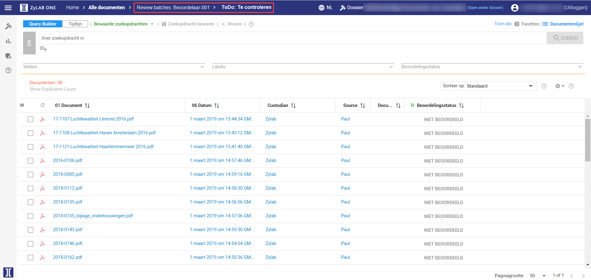

Dit is de aanbevolen werkwijze waarin wordt uitgelegd hoe beoordelaars snel naar de door hun te beoordelen documenten komen. Aan de hand van deze aanbevolen werkwijze schept u orde in de soms onoverzichtelijke dataset en kunt u op gemakkelijke wijze de gewenste documenten naar voren halen om deze vervolgens te beoordelen.
Wanneer we bij het facettenscherm zijn bij “Alle documenten”, laat de ToDo-facet zien hoeveel documenten in totaal nog beoordeeld moeten worden. Bij “Te controleren” staan de documenten die nog helemaal niet beoordeeld zijn, bij “Gecontroleerd” staan de documenten die de eerste controle hebben gehad en bij “Getoetst door JZ” staan de documenten die een tweede controle hebben gehad van Juridische Zaken en klaar zijn voor productie.
Vanaf het scherm hierboven, kunnen beoordelaars naar hun eigen beoordelingsbakje. Dit kunnen ze door hun bakje te selecteren. Het is hier van belang dat ze het bakje zelf selecteren en niet de blauwe streepjes. Wanneer deze worden geselecteerd, opent de documentlijst met de documenten die nog niet beoordeeld zijn, gecontroleerd zijn en getoetst zijn. Hierdoor wordt het overzicht verloren.

Wanneer het beoordelingsbakje wordt geselecteerd, komt het volgende scherm omhoog. Hier is nog een ToDo-facet te zien. In dit facet worden echter alleen de aantallen getoond van het beoordelingsbakje. Zo kunnen de beoordelaars goed zien waar ze in het proces zijn.

Vervolgens kan de beoordelaar klikken op het bakje “Te controleren”. Er komt dan een documentlijst omhoog, in plaats van een facettenscherm. Dit is de documentlijst waarin alleen nog documenten staan die nog beoordeeld moeten worden. De beoordelaar kan hier dus makkelijk zijn eigen documenten beoordelen tot de lijst leeg is.

Wanneer alle documenten in deze lijst beoordeeld zijn en het label “Gecontroleerd door Beleid” hebben gekregen, komen ze in het bakje “Gecontroleerd” terecht. Hier kunnen de beoordelaars van Juridische Zaken makkelijk de documenten vinden waar zij de laatste controle kunnen doen. Wanneer de laatste controle is gedaan en alleen nog de lijst van “Getoetst door JZ” gevuld is, kan er een productie gestart worden om de documenten op te leveren.